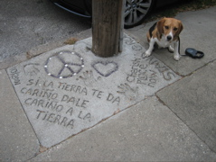
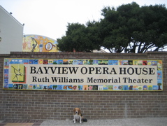
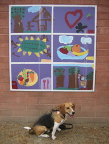
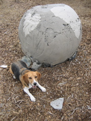
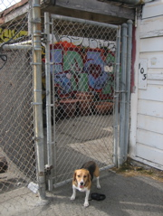
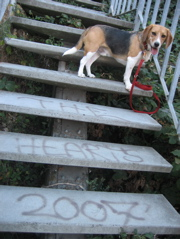
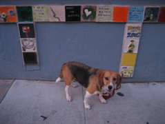
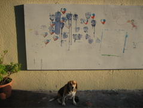
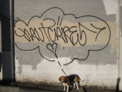

|

Take care of the earth and it will take care of you |

Bayview Opera House |

Some kid's mural |
|

Warm Water Cove |

Pier 70 |
21 Fountain Street |
|

Jaut: The Hearts 2007 |

B good to your friends and other stories |

Red Poppy Art House |
|
Mom |

Jaut Cares |
|
|
|
||